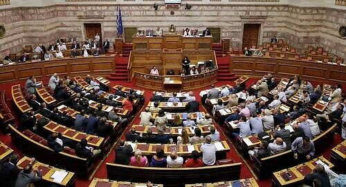

:Himno Nacional
La bandera de Grecia fue adoptada en 1830 después de los movimientos revolucionarios. El color de la bandera griega representa el mar. Las nueve franjas azules y blancas representan el símbolo: "Por la libertad, por la muerte". Se dice que las nueve franjas corresponden a las nueve sílabas de la palabra "elefzería í zánatos" (eleuthería oí Thanatos), que significa "libertad o muerte". En la esquina superior, junto al mástil, hay un cuadrado azul con una cruz blanca, que es el emblema de la Iglesia Ortodoxa Griega.


El escudo de armas de Grecia consiste en un campo azul con una cruz griega de plata, que la Iglesia Ortodoxa Griega quiso representar en 1828. El escudo está rodeado por dos ramas de laurel. Su versión actual fue aprobada el 7 de junio de 1975, cuando se eliminó la corona real y otros elementos relacionados con la antigua monarquía griega y sus condicionantes dinásticos.
Grecia tiene una población de unos 12.000.000 de personas, lo que da una densidad demográfica de alrededor de 90 h/km².
La población griega está distribuida de manera muy desigual. Más de la mitad de la población se concentra en unas pocas ciudades muy grandes y muy pocas ciudades medianas. En Grecia existe un gran contraste entre el mundo rural y el urbano. Las áreas rurales cubren más de las dos terceras partes del territorio y su densidad es inferior a la cuarta parte de la media nacional. Esta asimetría dificulta la prestación de servicios en las zonas rurales. Epiro, el Peloponeso central y Macedonia central se caracterizan por densidades de población aún más bajas, así como por aislamiento.
El área metropolitana de Atenas tiene más de cinco millones de habitantes, y Tesalónica tiene más de uno, es un importante centro de población del país. Es notable la pérdida de empleo en Volos, una de las ciudades más pobladas hace 20 años, pero estancada y superada por otros centros urbanos.
La población rural se caracteriza por aldeas y comunas concentradas alrededor de los manantiales, ubicados en lugares de difícil acceso, dejando terrenos llanos para el cultivo.
Desde el 1 de junio de 1975, con la adopción de la nueva Constitución, la República Helénica es una república democrática parlamentaria. Anteriormente, el país había sido gobernado mediante una monarquía parlamentaria, sistema que fue rechazado mediante un referéndum del pueblo griego el 8 de diciembre de 1974. El voto es obligatorio y universal, siendo adquirido ese derecho a los dieciocho años.
 Al ser una república parlamentaria, el poder político del país está dividido en cuatro figuras:
Aunque Grecia es considerado como lugar de clima típicamente mediterráneo, geográfica y climáticamente el territorio griego es muy variado, el clima de Grecia se divide en tres clases:


En términos generales, el año puede dividirse en dos estaciones principales: un primer período relativamente frío y lluvioso a partir de noviembre hasta finales de marzo, y la estación caliente y seca a partir de abril hasta septiembre.
Los principales golfos en Grecia son: el Golfo de Tesalónica, el Golfo de Corinto, el Golfo de Patras, el Golfo Estrimónico y el Golfo de Eubea.
Las principales islas y archipiélagos son: en el Mar Jónico, las Islas Jónicas, en el Mar de Creta, la Isla de Creta, y en el Mar Egeo, los archipiélagos del Dodecaneso y las Cícladas.

Entre las penínsulas destaca sobre todas, la península del Peloponeso.
Los ríos griegos son cortos y de escasa entidad, aunque muy numerosos. Las pocas nieves que acumulan las montañas griegas hace que sean, mayoritariamente de alimentación pluvial o Régimen nival. Podemos distinguir entre dos vertientes principales, la del Egeo y la del mar Jónico. En la vertiente del Egeo destacan los ríos: Vardar, Strymonas, Aliákmonas, Peneo y Cefiso. En la vertiente del mar Jónico destacan los ríos: Alfeo, Aspropótamos y Aracto. Apenas encontramos lagos. El mayor es el Gran Prespa, que hace frontera con Macedonia y Albania.
| Año | PIB (USD) | PIB/Ingresos Per Capita (USD) |
|---|---|---|
| 1990 | 97.979 millones | |
| 1991 | 105.642 millones | |
| 1992 | 116.624 millones | |
| 1993 | 109.010 millones | |
| 1994 | 116.539 millones | |
| 1995 | 136.968 millones | |
| 1996 | 145.875 millones | |
| 1997 | 143.343 millones | |
| 1998 | 144.645 millones | |
| 1999 | 149.040 millones | |
| 2000 | 132.197 millones | |
| 2001 | 136.308 millones | |
| 2002 | 154.376 millones | |
| 2003 | 202.311 millones | |
| 2004 | 240.848 millones | |
| 2005 | 248.207 millones | |
| 2006 | 273.558 millones | |
| 2007 | 318.940 millones | |
| 2008 | 356.140 millones | |
| 2009 | 330.837 millones | |
| 2010 | 299.919 millones | |
| 2011 | 288.062 millones | |
| 2012 | 245.807 millones | |
| 2013 | 239.937 millones | |
| 2014 | 236.455 millones | |
| 2015 | 194.958 millones | |
| 2016 | 194.248 millones | |
| 2017 | 193.100 millones |